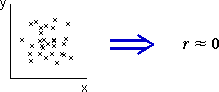

Definition of the correlation coefficient
The correlation coefficient is usually defined by the formula
The formula for r however matters less than its properties.
How does r relate to the shape of a scatterplot?
The following properties of r explain in general terms how its value is related to the strength of a relationship in any particular scatterplot. You will not be able to interpret a correlation coefficient unless you know these properties.
|
 |
|
 |
|
 |
|
  |
|
−1 ≤ r ≤ +1 |
How does r relate to the shape of a scatterplot?
The above properties describe the general behaviour of the correlation coefficient, but do not give enough resolution for you to anticipate the type of scatterplot that might have correlation coefficient 0.8 say, or 0.96.
To understand what the value of a correlation coefficient tells you, it is important to be able to estimate the value of r roughly from looking at any scatterplot. Conversely, you should be able to imagine the types of scatterplot that might give rise to any value of r.
To get this level of understanding, you need the experience of looking at a variety of scatterplots and the corresponding values of r.
Use the slider to adjust the correlation coefficient in the above scatterplot. Try to remember the patterns of crosses that result in correlation coefficients of -0.99, -0.95, -0.9, -0.8, -0.5, 0, 0.5, 0.8, 0.9, 0.95 and 0.99. After clicking on the slider, you may use the arrow keys on your keyboard for finer control over the slider.
Use the button Sample to display a variety of scatterplots with the same value of r. Use the popup menu to repeat the exercise with different numbers of points.